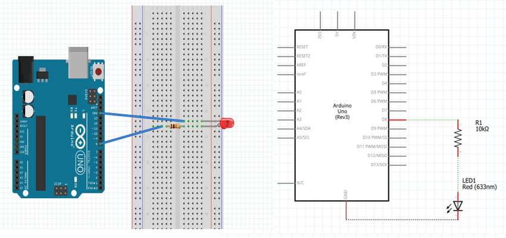

LEDs make great indicator lights. They use very little electricity and they pretty much last forever. The most common of all LEDs a 5mm red LED. 5mm refers to the diameter of the LED and as well as 5mm, other common sizes are 3mm and the large fun 10mm LEDs. You cannot directly connect an LED to a battery or voltage source. Firstly, because the LED has a positive and a negative lead and will not light if they are the wrong way around and secondly, an LED must be used with a resistor to limit the amount of current flowing through the LED - otherwise the LED could burn out
If you do not use a resistor with an LED, then it may well be destroyed almost immediately,as too much current will flow through the LED, heating it and destroying the 'junction' where the light is produced.
There are two ways to tell which is the positive lead of the LED and which the negative.
Bread Board Layout

/*
Blink
Turns on an LED on for one second, then off for one second, repeatedly.
*/
// Pin 8 has an LED connected on most Arduino boards.
int led = 8; // the setup routine runs once when you press reset:
void setup() {
pinMode(led, OUTPUT); // initialize the digital pin as an output.
}
// the loop routine runs over and over again forever:
void loop() {
digitalWrite(led, HIGH); // turn the LED on (HIGH is the voltage level)
delay(1000); // wait for a second
digitalWrite(led, LOW); // turn the LED off by making the voltage LOW
delay(1000); // wait for a second
}